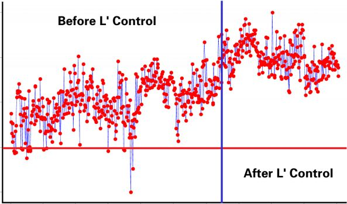
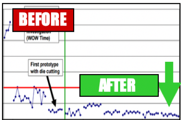

Roy Chancellor
roychance.wordpress.com
(480) 242-6356
roychance600@gmail.com
2014 E. Anderson Drive, Phoenix, AZ 85022
roychance.wordpress.com
(480) 242-6356
roychance600@gmail.com
2014 E. Anderson Drive, Phoenix, AZ 85022
SUMMARY
PROBLEM SOLVER
Executed binary search strategies that found the Red X causing dim edges on electroluminescent (EL) lamps at an automotive customer. Installed a statistical control plan that permanently eliminated the root cause and drove the complaint to zero incidents.
PROBLEM PREVENTER
New peel-off EL lamp product was sticking to its substrate. Isolated the cause to a chemical interaction with UV curing, but was unable to get to root cause. Implemented a simple die-cutting solution that enabled lamp removal and allowed a high-yield, on-time launch.
PROFESSIONAL EXPERIENCE
Great Hearts Academies, Phoenix, AZ
EDUCATION
Advanced Graduate Certificate, Applied Statistics
M.S., Mechanical Engineering
B.S.E., Mechanical Engineering
Schweitzer Engineering Laboratories, Pullman, WA
Intel Corporation, Chandler, AZ
Rogers Corporation, Chandler, AZ
Orbital Sciences Corporation, Chandler, AZ
W.L. Gore and Associates, Phoenix, AZ